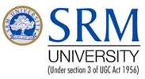

SRM University, a part four decade old SRM Group of Educational Institution, has emerged as one of the top ranked and most preferred institute in India with 1,500 faculty and 20,000 students. SRM offers undergraduate, post graduate and doctoral programs in Engineering, Management, Medicine & Health Sciences, and Science & Humanities. The university is committed to emerge as a world class institute driven by excellence of vision and execution of mission by a pro-active leadership team.
Vision
To emerge as a World Class University in creating and disseminating knowledge, and providing students a unique learning experience in science, technology, medicine, management and other areas of scholarship that will best serve the world and betterment of mankind.
Mission
Move up through international alliances and collaborative initiatives to achieve global excellence. Accomplish a process to advance knowledge in a rigorous academic and research environment. Attract and build people in a rewarding and inspiring environment by fostering freedom, empowerment, creativity and innovation.
Key initiatives & differentiators
Some of the most important strategic initiatives at SRM University are : -(i) International Advisory Board 50 eminent professors drawn from 50 top universities across the world including MIT, Harvard, Stanford, UC Berkeley, Carnegie Mellon, Cambridge and NUS, to build international standards. (ii) Faculty Abroad Program, sponsoring the faculty overseas to co-work on research, joint publications and patents. (iii) Semester Abroad Program, a great opportunity for students to experience MIT, Carnegie, Wisconsin, Warwick and others. (iv) Corporate Advisory Board, connection with 60 CEOs/ top executives to bring real world into the class room and research. (v) ECE program accredited by ABET, USA (vi) Center of Excellence in Nanotechnology, Bio - Info, Teaching & Learning and others. (vi) Diversity of Students from across India and the world, to bring in inspiring and exciting living and learning environment. Recent initiatives include Nobel Quest @ SRM, an interactive secession of students and faculty with Nobel Laureates, and Collaborative Industrial Research bring newer dimension in promoting scientific temper, innovation, incubation and entrepreneurship.
Ranking
SRM University was ranked India's No.1 Multiple Streams University (Engineering & Medicine), joining the league of IITs, NITs & AIMS
The Education Times (The Times of India) - GfK Mode 2009. Financial Express survey 2009
Accreditation
The B.Tech - Electronics and Communication Engineering Program is the first in India to get accredited by the Engineering Accreditation Commission of ABET,
USA.
SRM University is accredited by NAAC and other competent authorities
Placement
TCS, WIPRO and HCL each set trends at SRM with their highest ever recruitment at any campus enabling SRM to achieve placement of 2023 students in just seven days of the current placement season.
|